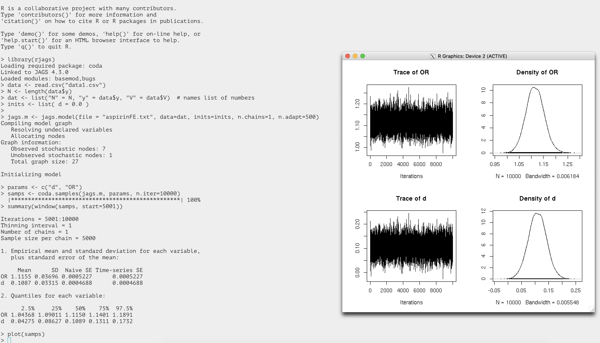

Some packages and other information
Warning
Since the HPCC OS transition to Ubuntu in summer 2024, R modules have changed. This tutorial applies to R in general; however, HPCC-specific module commands need to be updated by the users at the moment. We will revamp R-related tutorials in the near future.
rstan
The example here follows that in RStan Getting Started. To test rstan on the HPCC, first load R 3.6.2:
module purge
module load GCC/8.3.0 OpenMPI/3.1.4 R/3.6.2-X11-20180604
As of February 2020, the rstan version is 2.19.2.
The stan model file "8schools.stan" contains:
data {
int<lower=0> J; // number of schools
real y[J]; // estimated treatment effects
real<lower=0> sigma[J]; // standard error of effect estimates
}
parameters {
real mu; // population treatment effect
real<lower=0> tau; // standard deviation in treatment effects
vector[J] eta; // unscaled deviation from mu by school
}
transformed parameters {
vector[J] theta = mu + tau * eta; // school treatment effects
}
model {
target += normal_lpdf(eta | 0, 1); // prior log-density
target += normal_lpdf(y | theta, sigma); // log-likelihood
}
The R code ("run.R") to run stan model contains:
library("rstan")
options(mc.cores = parallel::detectCores())
rstan_options(auto_write = TRUE)
schools_dat <- list(J = 8,
y = c(28, 8, -3, 7, -1, 1, 18, 12),
sigma = c(15, 10, 16, 11, 9, 11, 10, 18))
fit <- stan(file = '8schools.stan', data = schools_dat)
print(fit)
pairs(fit, pars = c("mu", "tau", "lp__"))
la <- extract(fit, permuted = TRUE) # return a list of arrays
mu <- la$mu
To run the model from the command line:
Rscript run.R
In addition to the results printed to the stdout, there is an R object file named 8schools.rds generated. This is due to that we've set auto_write to TRUE in run.R. More about the auto_write option:
Logical, defaulting to the value of rstan_options("auto_write"), indicating whether to write the object to the hard disk using saveRDS. Although this argument is FALSE by default, we recommend calling rstan_options("auto_write" = TRUE) in order to avoid unnecessary recompilations. If file is supplied and its dirname is writable, then the object will be written to that same directory, substituting a .rds extension for the .stan extension. Otherwise, the object will be written to the tempdir.
rjags
To use {rjags}, first load R and JAGS from a dev-node (e.g. dev-amd20) as follows:
Loading R and JAGS
module purge
module load GCC/8.3.0 OpenMPI/3.1.4 R/4.0.2
module load JAGS/4.3.0
Next, we will run a short example of data analysis using rjags. This example comes from this tutorial which presents many Bayesian models using this package.
To invoke R from the command line: R --vanilla
Then, in the R console, you can run the following codes (for detailed explanation refer to the tutorial mentioned above):
Sample R code using {rjags} commands
library(rjags)
data <- read.csv("data1.csv")
N <- length(data$y)
dat <- list("N" = N, "y" = data$y, "V" = data$V)
inits <- list( d = 0.0 )
jags.m <- jags.model(file = "aspirinFE.txt", data=dat, inits=inits, n.chains=1, n.adapt=500)
params <- c("d", "OR")
samps <- coda.samples(jags.m, params, n.iter=10000)
summary(window(samps, start=5001))
plot(samps)
where the two input files, data1.csv and aspirinFE.txt, need to be
located in the working directory. The content of the two files is below.
N,y,V
1,0.3289011,0.0388957
2,0.3845458,0.0411673
3,0.2195622,0.0204915
4,0.2222206,0.0647646
5,0.2254672,0.0351996
6,-0.1246363,0.0096167
7,0.1109658,0.0015062
model {
for ( i in 1:N ) {
P[i] <- 1/V[i]
y[i] ~ dnorm(d, P[i])
}
### Define the priors
d ~ dnorm(0, 0.00001)
### Transform the ln(OR) to OR
OR <- exp(d)
}
A screen shot of the entire run including the output figures is attached here.

R2OpenBUGS
R package R2OpenBUGS is available on the HPCC.
OpenBUGS is a software package that performs Bayesian inference Using Gibbs Sampling. The latest version of OpenBUGS on the HPCC is 3.2.3. R2OpenBUGS is an R package that allows users to run OpenBUGS from R.
To load R and OpenBUGS, run:
module purge
module load GCC/8.3.0 OpenMPI/3.1.4 R/4.0.2
module load OpenBUGS
Then, in your R session, use library(R2OpenBUGS) to load this package. You can execute the following testing R code to see if it works for you.
Testing R2OpenBUGS
library(R2OpenBUGS)
# Define the model
BUGSmodel <- function() {
for (j in 1:N) {
Y[j] ~ dnorm(mu[j], tau)
mu[j] <- alpha + beta * (x[j] - xbar)
}
# Priors
alpha ~ dnorm(0, 0.001)
beta ~ dnorm(0, 0.001)
tau ~ dgamma(0.001, 0.001)
sigma <- 1/sqrt(tau)
}
# Data
Data <- list(Y = c(1, 3, 3, 3, 5), x = c(1, 2, 3, 4, 5), N = 5, xbar = 3)
# Initial values for the MCMC
Inits <- function() {
list(alpha = 1, beta = 1, tau = 1)
}
# Run BUGS
out <- bugs(data = Data, inits = Inits, parameters.to.save = c("alpha", "beta", "sigma"), model.file = BUGSmodel, n.chains = 1, n.iter = 10000)
# Examine the BUGS output
out
# Inference for Bugs model at "/tmp/RtmphywZxh/model77555ea534aa.txt",
# Current: 1 chains, each with 10000 iterations (first 5000 discarded)
# Cumulative: n.sims = 5000 iterations saved
# mean sd 2.5% 25% 50% 75% 97.5%
# alpha 3.0 0.6 1.9 2.7 3.0 3.3 4.1
# beta 0.8 0.4 0.1 0.6 0.8 1.0 1.6
# sigma 1.0 0.7 0.4 0.6 0.8 1.2 2.8
# deviance 13.0 3.7 8.8 10.2 12.0 14.6 22.9
#
# DIC info (using the rule, pD = Dbar-Dhat)
# pD = 3.9 and DIC = 16.9
# DIC is an estimate of expected predictive error (lower deviance is better).
R interface to TensorFlow/Keras
After you've installed TF in your conda environment, load R 4.1.2 and set up a few environment variables:
module purge; module load GCC/11.2.0 OpenMPI/4.1.1 R/4.1.2
export CONDA_PREFIX=/mnt/home/user123/anaconda3/envs/tf_gpu_Feb2023
export LD_LIBRARY_PATH=$CONDA_PREFIX/lib/:$CONDA_PREFIX/lib/python3.9/site-packages/tensorrt:$LD_LIBRARY_PATH
export XLA_FLAGS=--xla_gpu_cuda_data_dir=$CONDA_PREFIX/lib # to fix "Can't find libdevice directory ${CUDA_DIR}/nvvm/libdevice."
Above, you need to change CONDA_PREFIX to your own conda env path (that is, the directory where you have installed Conda).
Then, run the following R code to test if R/TF works as expected.
library(tensorflow)
library(keras)
library(tfdatasets)
use_python("/mnt/home/user123/anaconda3/envs/tf_gpu_Feb2023/bin")
use_condaenv("/mnt/home/user123/anaconda3/envs/tf_gpu_Feb2023")
# simple test
tf$config$list_physical_devices("GPU")
# model training
# loading the keras inbuilt mnist dataset
data<-dataset_mnist()
#separating train and test file
train_x<-data$train$x
train_y<-data$train$y
test_x<-data$test$x
test_y<-data$test$y
rm(data)
# converting a 2D array into a 1D array for feeding into the MLP and normalising the matrix
train_x <- array(train_x, dim = c(dim(train_x)[1], prod(dim(train_x)[-1]))) / 255
test_x <- array(test_x, dim = c(dim(test_x)[1], prod(dim(test_x)[-1]))) / 255
# converting the target variable to once hot encoded vectors using keras inbuilt function
train_y<-to_categorical(train_y,10)
test_y<-to_categorical(test_y,10)
# defining a keras sequential model
model <- keras_model_sequential()
# defining the model with 1 input layer[784 neurons], 1 hidden layer[784 neurons] with dropout rate 0.4 and 1 output layer[10 neurons]
# i.e number of digits from 0 to 9
model %>%
layer_dense(units = 784, input_shape = 784) %>%
layer_dropout(rate=0.4)%>%
layer_activation(activation = 'relu') %>%
layer_dense(units = 10) %>%
layer_activation(activation = 'softmax')
# compiling the defined model with metric = accuracy and optimiser as adam.
model %>% compile(
loss = 'categorical_crossentropy',
optimizer = 'adam',
metrics = c('accuracy')
)
# fitting the model on the training dataset
model %>% fit(train_x, train_y, epochs = 20, batch_size = 128)
# evaluating model on the cross validation dataset
loss_and_metrics <- model %>% evaluate(test_x, test_y, batch_size = 128)
R 3.5.1 with Intel MKL
Intel MKL can accelerate R's speed in linear algebra calculations (such as cross-product, matrix decomposition, inverse computation, linear regression and etc.) by providing BLAS with higher performance. On the HPCC, only 3.5.1 has been built by linking to Intel MKL.
Loading R
Loading R 3.5.1 built w/ OpenBLAS
module purge
module load GCC/7.3.0-2.30 OpenMPI/3.1.1 R/3.5.1-X11-20180604
Loading R 3.5.1 built w/ MKL
module purge
module load R-Core/3.5.1-intel-mkl
You could double check the BLAS/LAPACK libraries linked by running
sessionInfo() in R.
Benchmarking
We have a simple R code, crossprod.R, for testing the computation
time. The code is below, where the function crossprod can run in a
multi-threaded mode implemented by OpenMP.
set.seed(1)
m <- 5000
n <- 20000
A <- matrix(runif (m*n),m,n)
system.time(B <- crossprod(A))
Now, open an interactive SLURM job session by requesting 4 cores:
Benchmarking OpenBLAS vs. MKL (multi-threads)
salloc --time=2:00:00 --cpus-per-task=4 --mem=50G --constraint=intel18
# After you are allocated a compute node, do the following.
# 1) Run R/OpenBLAS
module purge
module load GCC/7.3.0-2.30 OpenMPI/3.1.1 R/3.5.1-X11-20180604
Rscript --vanilla crossprod.R &
# Time output:
# user system elapsed
# 50.036 1.574 14.156
# 2) Run R/MKL
module purge
module load R-Core/3.5.1-intel-mkl
Rscript --vanilla crossprod.R &
# Time output:
# user system elapsed
# 28.484 1.664 8.737
Above, the boost in speed is clear from using MKL as compared with OpenBLAS.
Even if we use a single thread (by requesting one core), MKL still shows some advantage.
Benchmarking OpenBLAS vs. MKL (single-thread)
salloc --time=2:00:00 --cpus-per-task=1 --mem=50G --constraint=intel18
# After you are allocated a compute node, do the following.
# 1) Run R/OpenBLAS
module purge
module load GCC/7.3.0-2.30 OpenMPI/3.1.1 R/3.5.1-X11-20180604
Rscript --vanilla crossprod.R &
# Time output:
# user system elapsed
# 47.763 0.598 49.287
# 2) Run R/MKL
module purge
module load R-Core/3.5.1-intel-mkl
Rscript --vanilla crossprod.R &
# Time output:
# user system elapsed
# 25.846 0.641 27.006
Notes
When loading R, the OpenMP environment variable OMP_NUM_THREADS is left
unset. This means that when running R code directly on a dev-node, all
CPUs on that node will be used by the internal multithreading library
compiled into R. This is discouraged since the node will be
overloaded and your job may even fail. Therefore, please set
OMP_NUM_THREADS to a proper value before running the R code. For
example,
$ OMP_NUM_THREADS=4
$ Rscript --vanilla crossprod.R
On the other hand, when the code is run on a compute node allocated by SLURM, you don’t need to set OMP_NUM_THREADS as R would automatically detect CPUs available for use (which should have been requested in your salloc command or sbatch script).